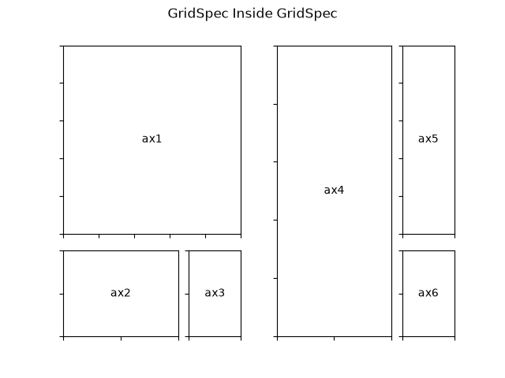

Note
Go to the end to download the full example code.
Nested Gridspecs#
GridSpecs can be nested, so that a subplot from a parent GridSpec can set the position for a nested grid of subplots.
Note that the same functionality can be achieved more directly with
subfigures; see
Figure subfigures.
import matplotlib.pyplot as plt
import matplotlib.gridspec as gridspec
def format_axes(fig):
for i, ax in enumerate(fig.axes):
ax.text(0.5, 0.5, "ax%d" % (i+1), va="center", ha="center")
ax.tick_params(labelbottom=False, labelleft=False)
# gridspec inside gridspec
fig = plt.figure()
gs0 = gridspec.GridSpec(1, 2, figure=fig)
gs00 = gridspec.GridSpecFromSubplotSpec(3, 3, subplot_spec=gs0[0])
ax1 = fig.add_subplot(gs00[:-1, :])
ax2 = fig.add_subplot(gs00[-1, :-1])
ax3 = fig.add_subplot(gs00[-1, -1])
# the following syntax does the same as the GridSpecFromSubplotSpec call above:
gs01 = gs0[1].subgridspec(3, 3)
ax4 = fig.add_subplot(gs01[:, :-1])
ax5 = fig.add_subplot(gs01[:-1, -1])
ax6 = fig.add_subplot(gs01[-1, -1])
plt.suptitle("GridSpec Inside GridSpec")
format_axes(fig)
plt.show()
